[ 媒体 / Meta ]
Meta広告
Meta 広告（Facebook・Instagram・Messenger・Threads・Audience Network。WhatsApp の配置も一部ある）の知識ベースの入口。各論（01 配信の仕組み、02 入札と予算、04 構成、05 クリエイティブ、06 計測、23 ターゲティング、26 効果測定、27 アカウント、31・34 審査）を書く前の「地図」。Google 広告の知識ベース（`../Google広告の基礎/`）を知って
15メモ
535,192字
521仕様の規則
図
図で見る
先に 4 媒体を比べる図、続けて Meta の仕組みの図 34 枚です。押すと、その図が載っている節へ行きます。
4 媒体で比べる
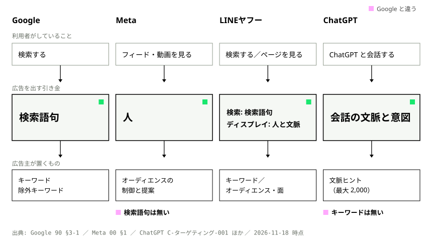
X01広告を出す引き金 X02「学習」の意味の違い
X02「学習」の意味の違い X03予算の上振れの比べ方: Google・Meta・LINEヤフー・ChatGPT
X03予算の上振れの比べ方: Google・Meta・LINEヤフー・ChatGPT X04計測の部品の対応: Google・Meta・LINEヤフー・ChatGPT
X04計測の部品の対応: Google・Meta・LINEヤフー・ChatGPT X05運用の型の当てはめの比較: Meta・LINEヤフー・ChatGPT
X05運用の型の当てはめの比較: Meta・LINEヤフー・ChatGPT X06審査の比べ方: Google・Meta・LINEヤフー・ChatGPT
X06審査の比べ方: Google・Meta・LINEヤフー・ChatGPT X07広告文はどこで切れるか: Google・LINEヤフー・Meta・ChatGPT
X07広告文はどこで切れるか: Google・LINEヤフー・Meta・ChatGPTMeta の仕組み
 M01アカウントの器の階層広告は広告アカウントの中のキャンペーン → 広告セット → 広告に入り、ページ・Instagram・データセット・カタログは広告アカウントと並ぶ「資産」としてポートフォリオが持つ。
M01アカウントの器の階層広告は広告アカウントの中のキャンペーン → 広告セット → 広告に入り、ページ・Instagram・データセット・カタログは広告アカウントと並ぶ「資産」としてポートフォリオが持つ。 M023 つの層で何を決めるか入札・オーディエンス・配置・アトリビューションまで広告セットで決まり、情報収集期間もこの単位で数える（Google は入札の単位がキャンペーン）。
M023 つの層で何を決めるか入札・オーディエンス・配置・アトリビューションまで広告セットで決まり、情報収集期間もこの単位で数える（Google は入札の単位がキャンペーン）。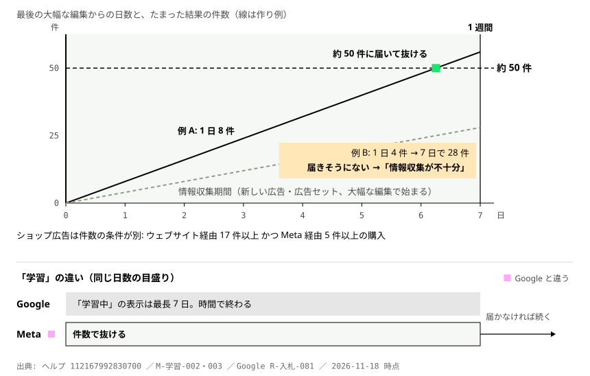
M03情報収集期間の関門情報収集期間は、最後の大幅な編集から 1 週間以内に約 50 件の結果（選んだアトリビューションの窓の中で数える）がたまると抜ける件数の関門で、届きそうにないと「情報収集が不十分」になる。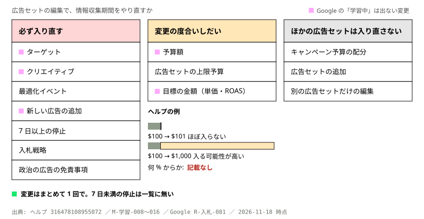
M04編集の 3 区分クリエイティブの差し替えや広告を 1 本足すだけでも、その広告セットは情報収集期間に入り直す（Google の「学習中」はこれらでは出ない）。 M05入札戦略の地図日本語ヘルプの入札は「消化金額に基づく・目標に基づく・手動」の 3 型で、手動は入札価格上限だけ（開発者文書は目標に基づく 2 つも manual bidding と呼ぶ △）。
M05入札戦略の地図日本語ヘルプの入札は「消化金額に基づく・目標に基づく・手動」の 3 型で、手動は入札価格上限だけ（開発者文書は目標に基づく 2 つも manual bidding と呼ぶ △）。 M06日予算の消化の幅日予算は日曜〜土曜の週の平均で、1 日は 175%（予算共有オンで 210%）まで使われうるが、週では 7 倍を超えない。
M06日予算の消化の幅日予算は日曜〜土曜の週の平均で、1 日は 175%（予算共有オンで 210%）まで使われうるが、週では 7 倍を超えない。 M07アトリビューションのモデルと窓アトリビューションはまず広告セットでモデル（標準・インクリメンタル・カスタム）を選び、標準のときだけ窓（クリックスルー 1・7 日、エンゲージスルー 1 日、ビュースルー 1 日）を選ぶ。
M07アトリビューションのモデルと窓アトリビューションはまず広告セットでモデル（標準・インクリメンタル・カスタム）を選び、標準のときだけ窓（クリックスルー 1・7 日、エンゲージスルー 1 日、ビュースルー 1 日）を選ぶ。 M08Advantage+ オーディエンスの制御と提案Advantage+ オーディエンスで守られるのは地域・最低年齢・除外するカスタムオーディエンス・言語だけで、年齢・性別・詳細ターゲット・含めるカスタムオーディエンスは「提案」として外にも広がる。
M08Advantage+ オーディエンスの制御と提案Advantage+ オーディエンスで守られるのは地域・最低年齢・除外するカスタムオーディエンス・言語だけで、年齢・性別・詳細ターゲット・含めるカスタムオーディエンスは「提案」として外にも広がる。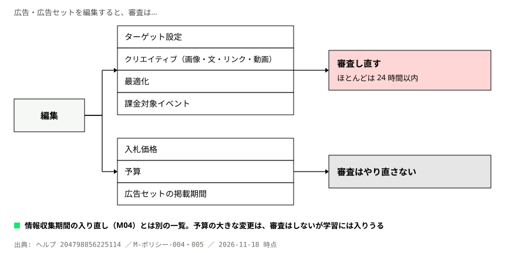
M09審査のやり直しになる編集ターゲット・クリエイティブ・最適化・課金対象イベントを変えると審査し直し（ほとんど 24 時間以内）、入札価格・予算・掲載期間の変更では審査しない。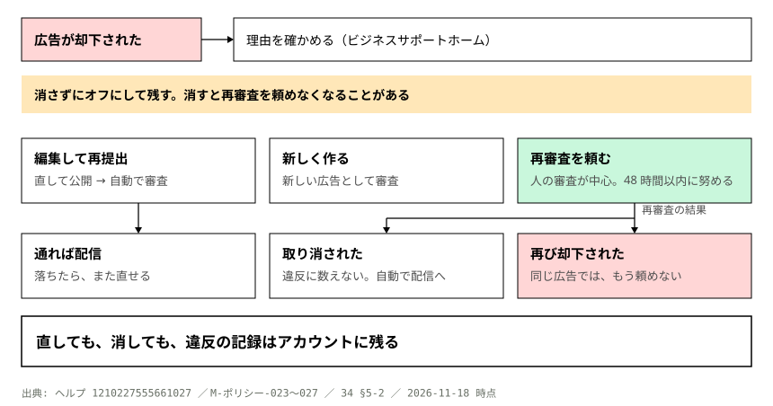
M10却下されたとき却下されたら消さずに残し、規定に当たっていたなら直して出し、判定が誤りなら再審査を頼む（再び却下されると同じ広告ではもう頼めない）。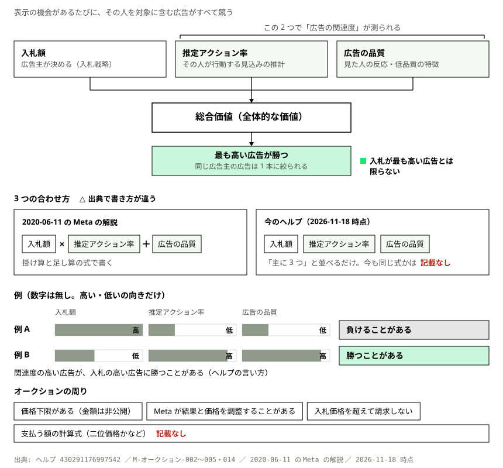
M11オークションで勝つ広告勝つのは入札額・推定アクション率・広告の品質の 3 つから決まる総合価値が最も高い広告で、入札が最も高い広告とは限らない。 M12広告関連度診断の 3 つのランキング関連度診断は品質・エンゲージメント率・コンバージョン率の 3 つの順位で、同じオーディエンス（コンバージョン率は同じ最適化の目的も）の広告と比べた 5 段階の帯で出るが、オークションの入力ではない。
M12広告関連度診断の 3 つのランキング関連度診断は品質・エンゲージメント率・コンバージョン率の 3 つの順位で、同じオーディエンス（コンバージョン率は同じ最適化の目的も）の広告と比べた 5 段階の帯で出るが、オークションの入力ではない。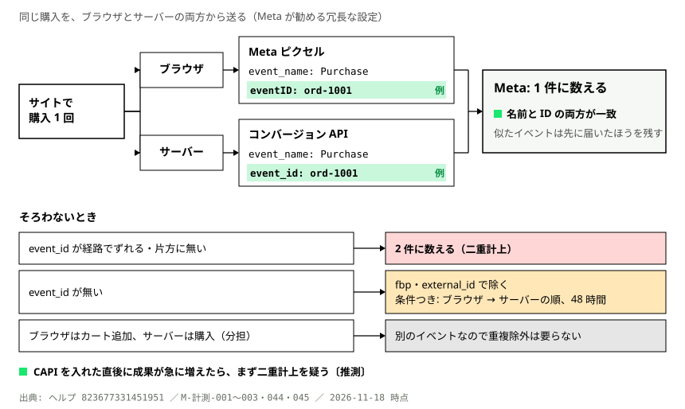
M13ピクセルとコンバージョン API の重複除外同じ購入をピクセル（ブラウザ）と CAPI（サーバー）の両方で送り、event_name と event_id（ピクセルは eventID）が一致すれば Meta が 1 件にする。 M14AEM の今と昔ウェブの AEM では、8 件の優先順位付け・［合算イベント測定］タブ・計測のためのドメイン認証・コンバージョンドメインの選択がどれも不要になり、何もしなくてもイベントは AEM で処理される（変更の日付は記載なし）。
M14AEM の今と昔ウェブの AEM では、8 件の優先順位付け・［合算イベント測定］タブ・計測のためのドメイン認証・コンバージョンドメインの選択がどれも不要になり、何もしなくてもイベントは AEM で処理される（変更の日付は記載なし）。 M15カスタムオーディエンスと類似オーディエンスカスタムオーディエンスは自社のソース（ウェブサイト・顧客リストなど）と Meta のソース（動画・リード獲得フォームなど）に分かれ、100 人以上いれば類似オーディエンスの元にできる。
M15カスタムオーディエンスと類似オーディエンスカスタムオーディエンスは自社のソース（ウェブサイト・顧客リストなど）と Meta のソース（動画・リード獲得フォームなど）に分かれ、100 人以上いれば類似オーディエンスの元にできる。 M16効果測定の手段の選び方「どちらが良いか」は A/B テスト（誰でも使える、1〜30 日、信頼性 65%）、「何件増えたか」はコンバージョンリフト、「認知が上がったか」はブランドリフトで、後の 2 つは予算と件数の条件に届くかで分かれる。
M16効果測定の手段の選び方「どちらが良いか」は A/B テスト（誰でも使える、1〜30 日、信頼性 65%）、「何件増えたか」はコンバージョンリフト、「認知が上がったか」はブランドリフトで、後の 2 つは予算と件数の条件に届くかで分かれる。 M17日本の法律と Meta の規定のどちらで落ちるかNo.1 表示・二重価格・ビフォーアフターなどは Meta の審査を通っても日本の法律で落ち、「〜でお悩みのあなたへ」や CFD は日本の法律では通っても Meta の規定で落ちる（どちらで落ちるかは書き手の読み〔推測〕）。
M17日本の法律と Meta の規定のどちらで落ちるかNo.1 表示・二重価格・ビフォーアフターなどは Meta の審査を通っても日本の法律で落ち、「〜でお悩みのあなたへ」や CFD は日本の法律では通っても Meta の規定で落ちる（どちらで落ちるかは書き手の読み〔推測〕）。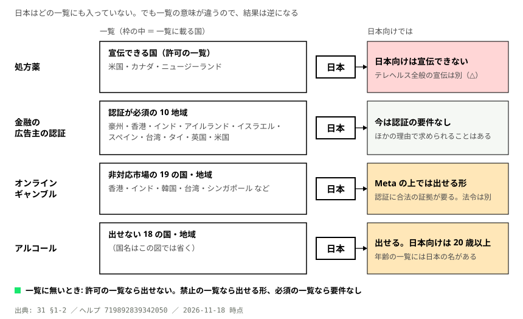
M18「国の一覧」で日本はどちらか処方薬・金融の広告主の認証・オンラインギャンブル・アルコールの国の一覧に日本はどれも入っていないが、処方薬は許可の一覧なので日本向けは出せず、ほかは禁止・必須の一覧なので出せる形か要件なしになる。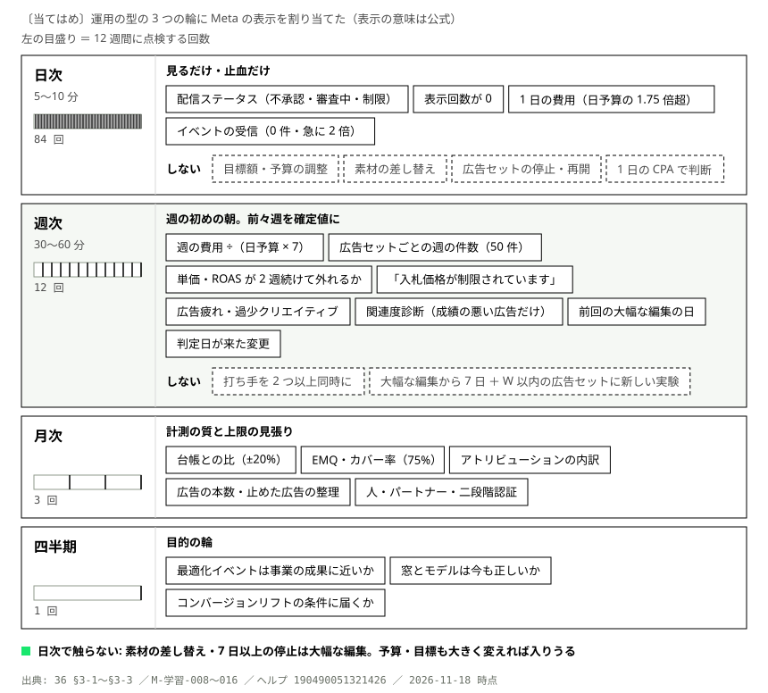
M19点検の頻度（日次・週次・月次・四半期）日次は配信の止まり・費用の暴走・計測の停止を見て止血だけをし、目標・予算・素材は触らず、判断は週次（前々週を確定値に、打ち手は 1 つ）で行う〔当てはめ〕。 M20立ち上げの型〔当てはめ〕週 50 件の関門から逆算すると、最適化イベントの単価は日予算 × 0.14 以下が要り、届かないイベントは一段手前に上げ、広告セットの数は週の予算 ÷（50 × 単価）まで（数字はすべて例、式は〔当てはめ〕）。
M20立ち上げの型〔当てはめ〕週 50 件の関門から逆算すると、最適化イベントの単価は日予算 × 0.14 以下が要り、届かないイベントは一段手前に上げ、広告セットの数は週の予算 ÷（50 × 単価）まで（数字はすべて例、式は〔当てはめ〕）。 M21機械への入力口と効き先運用者が動かせるのは、候補を囲う制約、予測の材料になる素材と提案、入札と量を決める入札・予算、正解を教える目的・最適化イベント・計測で、それぞれ 1 回の表示の別の段に効く〔当てはめ〕。
M21機械への入力口と効き先運用者が動かせるのは、候補を囲う制約、予測の材料になる素材と提案、入札と量を決める入札・予算、正解を教える目的・最適化イベント・計測で、それぞれ 1 回の表示の別の段に効く〔当てはめ〕。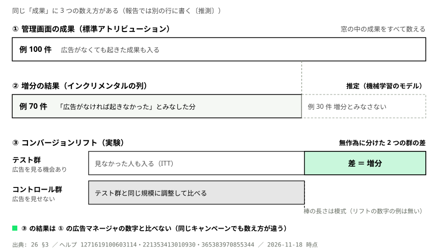
M22管理画面の成果・増分の結果・リフトの違い管理画面の成果は窓の中の成果をすべて数え、増分の結果の列はそのうち「広告がなければ起きなかった」と機械学習が推定した分（ヘルプの例では 100 件中 70 件）、コンバージョンリフトは無作為に分けたテスト群とコントロール群の差を実験で測る。 M23A/B テストとリフトの「信頼性」Meta の［テスト］は A/B テストを信頼性 65% 以上、リフトテストを 90% 以上で「統計的に信頼できる」とし、65% は同じテストを繰り返すと 3 回に 1 回強は違う結果になりうる水準（〔計算〕）。
M23A/B テストとリフトの「信頼性」Meta の［テスト］は A/B テストを信頼性 65% 以上、リフトテストを 90% 以上で「統計的に信頼できる」とし、65% は同じテストを繰り返すと 3 回に 1 回強は違う結果になりうる水準（〔計算〕）。 M24止める実験と「7 日」の境目広告セットを 7 日以上止めると再開の時点で情報収集期間に入り直すが、7 日未満の停止は大幅な編集の一覧に無い。
M24止める実験と「7 日」の境目広告セットを 7 日以上止めると再開の時点で情報収集期間に入り直すが、7 日未満の停止は大幅な編集の一覧に無い。 M25「出ない・高い」の切り分けの順配信ステータス → 予算と上限 → 構造 → 品質 → 入札 → オーディエンスと配置の順に確かめ、当たった所で止まる。
M25「出ない・高い」の切り分けの順配信ステータス → 予算と上限 → 構造 → 品質 → 入札 → オーディエンスと配置の順に確かめ、当たった所で止まる。 M26公式のように言われていることと本文「予算 20% ルール」「二位価格」「EMQ 6 以上が合格」「画像の文字 20%」などは公式の本文に無く、総合価値の式は 2020 年の解説のもので今のヘルプは 3 要素を挙げるだけ（△）。
M26公式のように言われていることと本文「予算 20% ルール」「二位価格」「EMQ 6 以上が合格」「画像の文字 20%」などは公式の本文に無く、総合価値の式は 2020 年の解説のもので今のヘルプは 3 要素を挙げるだけ（△）。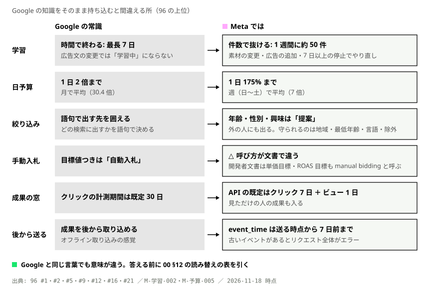
M27Google の常識と Meta の実際学習は時間でなく件数で抜け、日予算は月でなく週で平均し、年齢・性別・興味は絞り込みでなく提案になり、成果の既定の窓にビュー 1 日が入り、CAPI は 7 日より古い成果を受け付けない。 M28仕様の変更の年表（2021〜2027）2025〜2026 年に配置の廃止、旧 ASC・AAC の廃止、詳細ターゲットの除外の廃止、クリックの定義の変更（2026-03）が続き、古い手順書・記事・学習時点の記憶はこの年表のどこかで外れる。
M28仕様の変更の年表（2021〜2027）2025〜2026 年に配置の廃止、旧 ASC・AAC の廃止、詳細ターゲットの除外の廃止、クリックの定義の変更（2026-03）が続き、古い手順書・記事・学習時点の記憶はこの年表のどこかで外れる。 M29配置を外すと全体の単価が上がる例最大数量では配信システムが全配置の機会から安いものを選んで全体の平均単価を抑えるので、ヘルプの例では単価 5 ドルの Instagram を外すと、Audience Network で 7 ドルの機会まで取りにいき平均が 3 ドルから 3.25 ドルに上がる（1 件ごとの内訳は〔計算〕）。
M29配置を外すと全体の単価が上がる例最大数量では配信システムが全配置の機会から安いものを選んで全体の平均単価を抑えるので、ヘルプの例では単価 5 ドルの Instagram を外すと、Audience Network で 7 ドルの機会まで取りにいき平均が 3 ドルから 3.25 ドルに上がる（1 件ごとの内訳は〔計算〕）。 M30広告が止まる上限と、請求だけの線広告は予算と、キャンペーン・広告アカウントの上限予算、Meta が決める 1 日の上限予算のうち最初に達したもので止まり、支払い単位額に達しても請求されるだけで広告は続く。
M30広告が止まる上限と、請求だけの線広告は予算と、キャンペーン・広告アカウントの上限予算、Meta が決める 1 日の上限予算のうち最初に達したもので止まり、支払い単位額に達しても請求されるだけで広告は続く。 M31オーディエンスの条件の置き場所外の人に出ると困る条件は、全キャンペーン共通ならアカウント制御、そのキャンペーンだけならオーディエンス制御に置き、困らない条件は提案として渡す。
M31オーディエンスの条件の置き場所外の人に出ると困る条件は、全キャンペーン共通ならアカウント制御、そのキャンペーンだけならオーディエンス制御に置き、困らない条件は提案として渡す。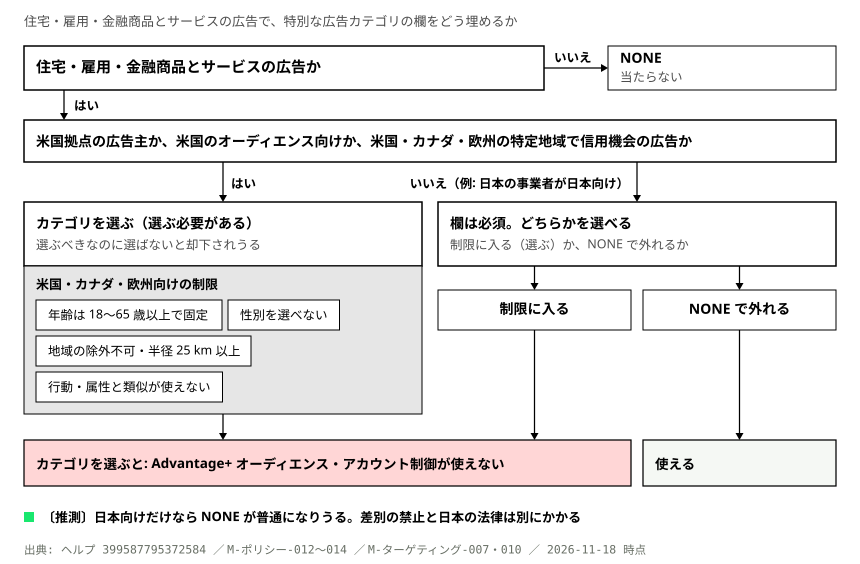
M32特別な広告カテゴリの欄の埋め方米国拠点・米国向け・米国カナダ欧州の信用機会の広告はカテゴリを選ぶ必要があり、それ以外（日本の事業者が日本向けなど）は欄は必須だが制限に入るか NONE で外れるかを選べる。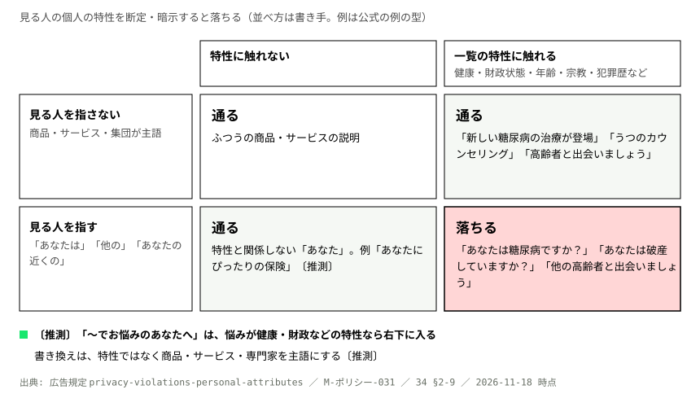
M33個人の特性に触れる文の通る・落ちる落ちるのは、見る人を指す言い方（「あなたは」「他の」「あなたの近くの」）で一覧の特性（健康・財政状態・年齢など）を断定・暗示する文で、特性に触れても商品や集団が主語なら公式の例では通る。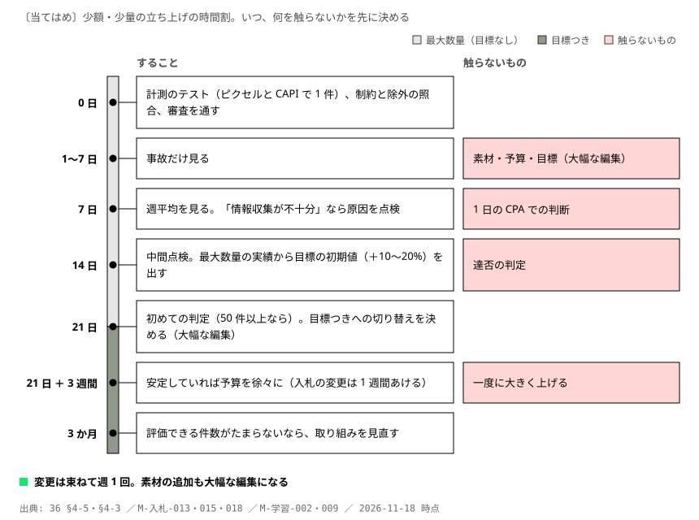
M34立ち上げの時間割〔当てはめ〕最初の 2 週間は最大数量で単価と週の件数をつかみ、14 日に最大数量の実績 ＋10〜20% で目標の初期値を出し、21 日に初めて判定して目標つきへの切り替え（大幅な編集）を決める（時間割は〔当てはめ〕、10〜20%・2 週間・3 週間は公式）。一覧
Meta のメモ
いまある分だけです。知識ベースに足されたら、作り直すとここにも出ます。
00全体像71,084 字01オークションと配信の仕組み28,388 字02入札と予算31,272 字06計測とコンバージョン（ピクセル・コンバージョン API・イベントの品質・アトリビューション）39,917 字23ターゲティングとオーディエンス31,434 字26効果測定の実務（A/B テスト・コンバージョンリフト・ブランドリフト・増分の結果・MMM）25,501 字28「運用の型」（Meta の公式の推奨から作った監査・引き継ぎ・立ち上げ・点検・予算・止める判断・繁忙期・目標・報告・変更の記録）40,762 字31日本の広告法規と、Meta 広告のポリシー（地図メモ）26,368 字34審査落ち（却下・制限）の原因と直し方56,993 字36運用の型の Meta への当てはめ（点検・立ち上げ・監査・改善・判断の差分）52,643 字65API とレポートの取り出し（日次の実績を読むだけ）34,431 字90核となる理解（Meta 広告の運用を、仕組みから考えるための 1 本）32,271 字94裏取りの記録10,242 字95出どころ一覧44,322 字96意外な点とよくある誤解9,564 字